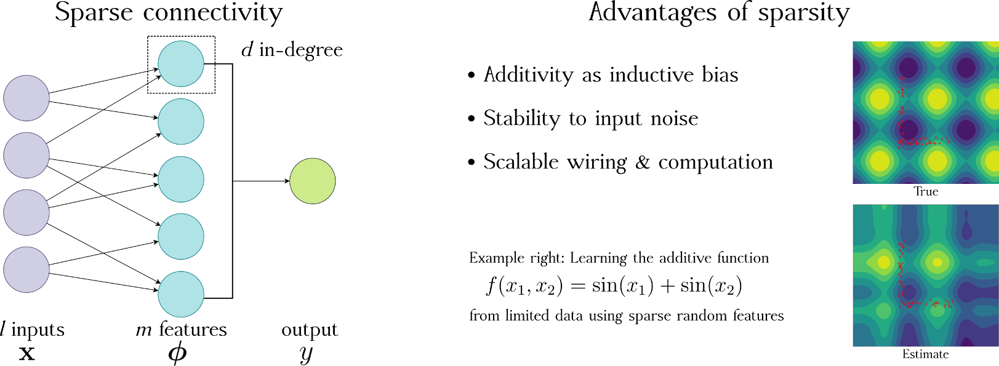
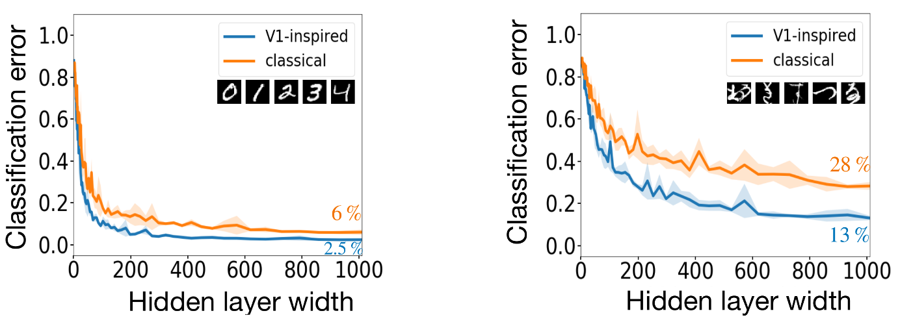
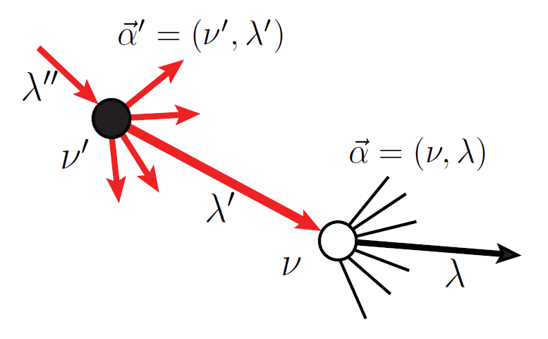
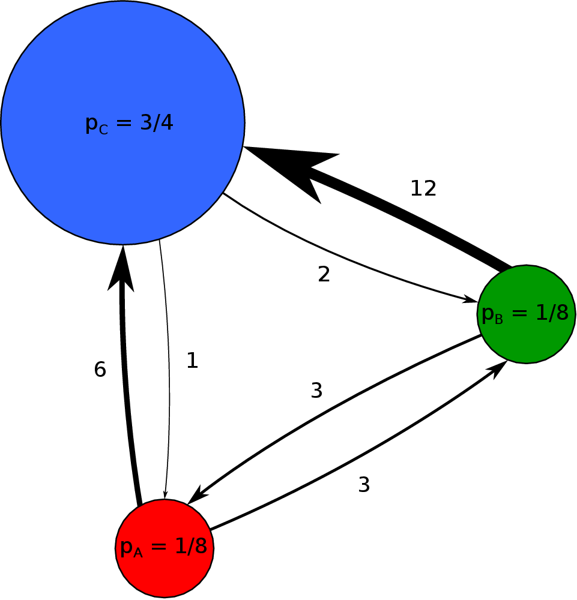
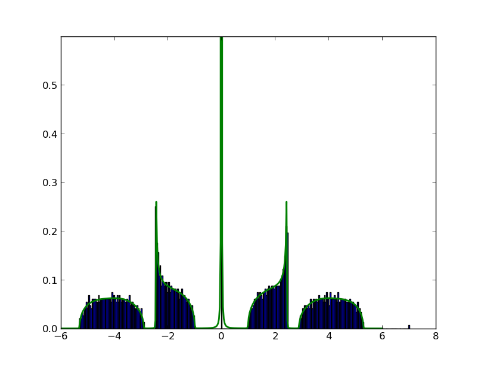
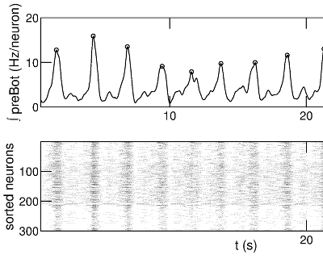
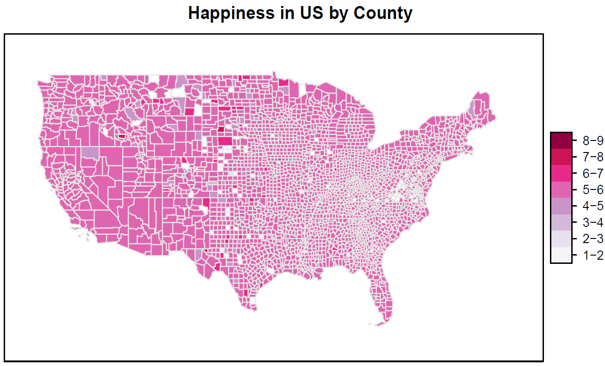
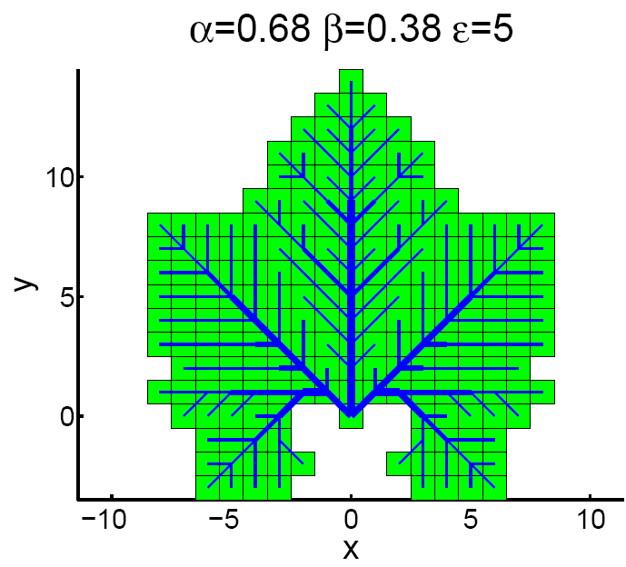

Our Research
I am a computational scientist and applied mathematician with an interest in networked dynamical systems, in particular neural systems. These systems are often adaptive, meaning they can learn from their environment, and exhibit complex behavior.
See our lab projects on GitHub
Methodologies that I apply include:
-
Statistical inference & machine learning
Dimensionality reduction
Dynamical systems
Graph & network theory.
-
Computer modeling
Linear algebra & matrix computations
Differential equations
Probability & analysis.
Slides and a few videos from a number of my talks are available here.
Some Active Projects
Theoretical neural networks: Artificial neural networks have enjoyed a huge renaissance in the last decade. Theory is starting to catch up to the enormous empirical success of these networks. A promising connection is the similarity of wide neural networks to kernel methods, which has shown success in explaining partially untrained and fully-trained networks in certain regimes ("random features" and "neural tangent kernel" are keywords).
These theories have mostly been developed for very simple neural architectures, like when the weights are drawn as independent Gaussians with equal variance. We have found it illuminating to ask, What changes when you add structures that are found in successful biological neuronal systems?
For example sparsity, an important conserved property of cerebellum and mushroom body brain areas, leads to the network approximating additive functions. This constraint leads to faster learning from fewer examples in such networks. Similarly, allowing the weights to reproduce known neuronal tuning properties from V1 leads to improved performance on simple image recognition tasks (work with Biraj Pandey and Bing Brunton).
Our view of networks as function approximators is uncommon in computational neuroscience, but offers many advantages. The kernel associated with a network architecture tells you important geometrical properties about the functions that it can approximate.
 Respiratory rhythms: The pre-Botzinger complex (preBot) is an area of the brainstem which is essential for breathing... which is obviously an essential system for us animals! This area contains a group of neurons which produce coordinated rhythmic bursts of activity which drive motoneurons to produce inspiration (the inward breath). Nearby areas produce the other phases of breathing, such as expiration, but none of them are as essential as preBot. Thus, preBot is often called the kernel of the respiratory central pattern generator.
Significant research has gone into identifying the properties of neurons in this area, but there continues to be disagreement about the mechanism of rhythmic bursting in preBot. We are using models to test whether the preBot rhythm is an example of emergent synchronization of neural activity. We specifically look at the role of inhibition and network connectivity in shaping the resulting rhythm. We have also modeled the effects of opioids on breathing.
-
This work is a collaboration with
Nino Ramirez and
Nathan Baertsch
at Seattle Children's Research Institute.

Random graphs, contagion, and machine learning: We examine the topology of random networks with arbitrary correlations between nodes of different types. From this, we can determine whether spreading is possible for different generalized contagion/diffusion processes. Inhomogeneous response functions among nodes as well as the ability for nodes to "turn off" can lead to more complex behavior.
Working with Ioana Dumitriu and Gerandy Brito, we've found semi-analytical techniques for computing eigenvalue spectra of random graphs. We can numerically solve recursive equations to find the spectral distribution. This technique works even for random graph models with complicated block structure, cases where the equations appear too difficult to solve by hand. We have also studied the spectral gap in certain bipartite, biregular random graph families, with applications to matrix completion, community detection, and expander codes.
 Older Research
These projects are no longer active, but there may still be interesting future directions to pursue.
Brain network inference: Together with Stefan Mihalas and others at the Allen Institute for Brain Science, I am improving the mathematical techniques used to analyze tracing experiments. In these experiments, mice are injected with a modified virus which travels along axons and causes them to express green fluourescent protein, highlighting which areas are targets of the injection site. We use the spatial regularities and symmetries of projections to "fill in" undersampled areas, leading to unprecedentedly detailed whole-brain connectivity matrices.
-
Download the voxel network or the Python package
mcmodels
Here is
the poster
I presented at NIPS, 2016.
I was a TA for the Summer Workshop on the Dynamic Brain in 2016:
video
 
Happiness of online interactions: Here we look at a basic measure of the happiness in large-scale texts. A psychological study called "Associative Norms for English Words" (ANEW) asked a number of adults to assign a happiness value or "valence" between 1 and 9 to 1035 common words. When considering a large enough sample of text, the average valence of the ANEW words contained therein can give a rough measure of the text's emotional content. This was recently published in a paper by Danforth and Dodds in the Journal of Happiness Studies. Together with the group at the Computational Story Lab we expanded this study to the social networking site Twitter.
-
Hedonometer is a website I helped design which
allows users to interactively explore these data
Chaotic convection, a platform for data assimilation: I worked with Chris Danforth, Darren Hitt, Nick Allgaier, and El Hassan Ridouane to build and analyze a physical analog of the 1963 Lorenz system, the first example of deterministic chaos. It's called a thermosyphon and is a type of non-mechanical heat pump or convection loop. We use a combination of data assimilation and ensemble forecasting methods to predict the occurance of flow reversals we call regime chnages. I've uploaded a cool video that shows one measure of the system's stability on the attractor. Here is a presentation outlining our research that was given at the UVM Student Research Conference.
-
My undergraduate
honors thesis

Leaf vascular networks: Also known as venation patterns, a number of mathematical models have been proposed to explain the branching structures of leaves. Qinglan Xia proposed a model in 2007 which grows each leaf while simultaneously minimizing a cost function. This approach produces both the vascular network and boundary of the leaf. Varying the parameters of the model can produce many of the shapes observed in nature, including that of the maple leaf (left, my reporduction). I began this as a project in the networks classes of Peter Dodds.
-
Term paper on the project